Usage
plot(x, z = NULL, round = TRUE, plot = pairs, ...)
Arguments
- x
- name of the power transformation object
- z
-
Additional variables of the same length as those used to get the transformation
to be plotted, default is
NULL. - round
-
If
TRUE, the default, use rounded transforms, ifFALSEuse the MLEs. - plot
-
Plotting method. Default is
pairs. Another possible choice isscatterplot.matrixfrom thecarpackage. - ...
- Optional arguments passed to the plotting method
plot Method for powerTransform Objects
Description
This function provides a simple function for plotting data using power transformations.
Details
The data used to estimate transformations using powerTransform are plotted
in the transformed scale.
Value
None. Produces a graph as a side-effect.
References
Weisberg, S. (2005) Applied Linear Regression, Third Edition. Wiley.
Fox, J. and Weisberg, S. (2011) An R Companion to Applied Linear Regression, Second Edition, Sage.
plot Method for powerTransform Objects
plot Method for powerTransform Objects
plot Method for powerTransform Objects
Examples
bcPower Transformations to Multinormality Est.Power Std.Err. Wald Lower Bound Wald Upper Bound len 0.1451 0.2135 -0.2733 0.5636 ADT 0.2396 0.1092 0.0255 0.4536 trks -0.7336 0.6159 -1.9408 0.4735 sigs1 -0.2959 0.1302 -0.5511 -0.0408 Likelihood ratio tests about transformation parameters LRT df pval LR test, lambda = (0 0 0 0) 13.134 4 0.01064 LR test, lambda = (1 1 1 1) 140.585 4 0.00000 LR test, lambda = (0 0.33 0 -0.5) 4.794 4 0.30913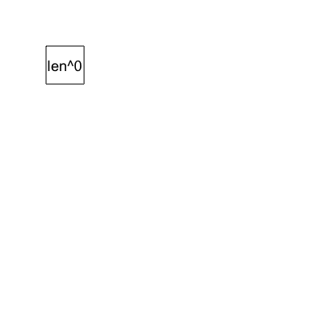
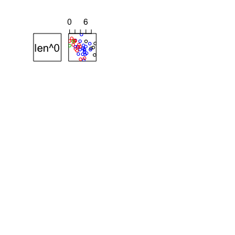
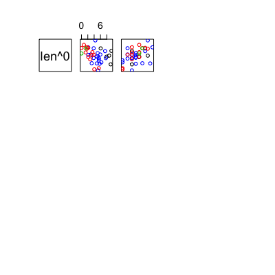
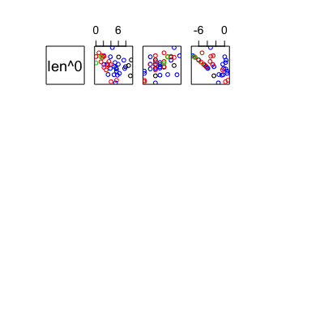
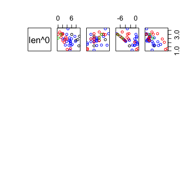
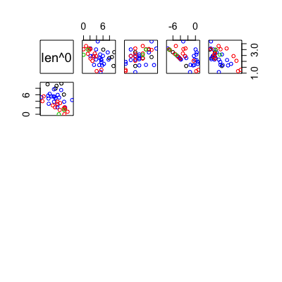
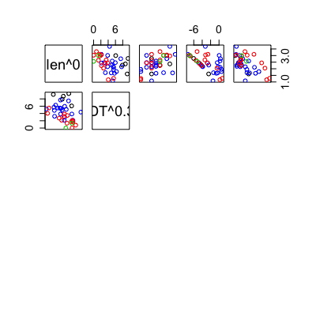
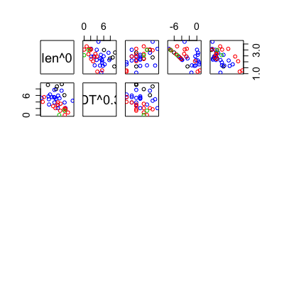
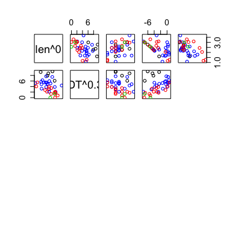
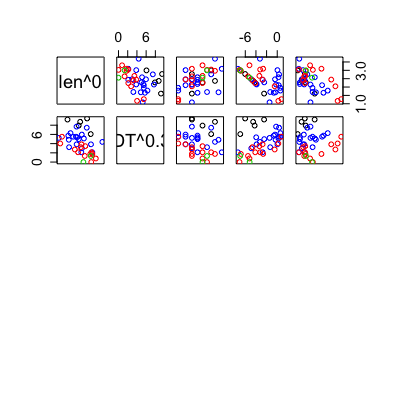
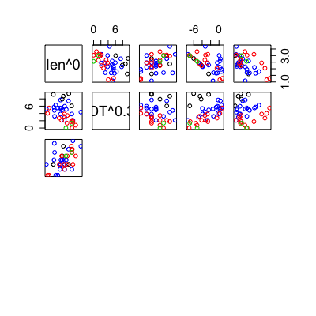
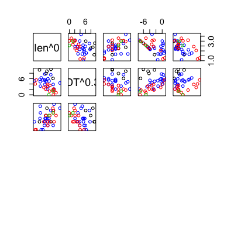
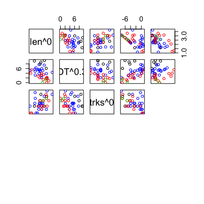
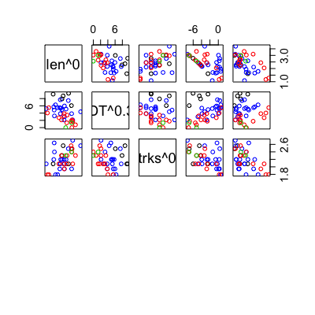
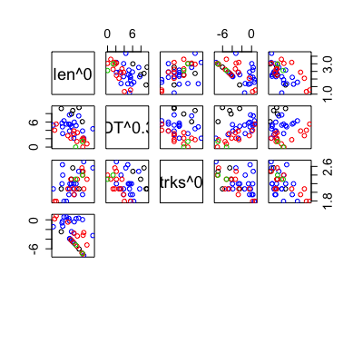
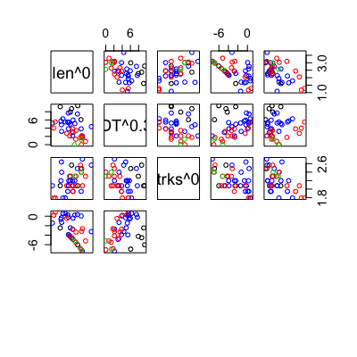
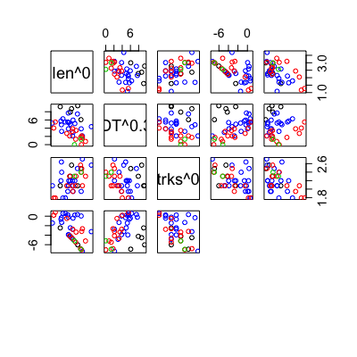
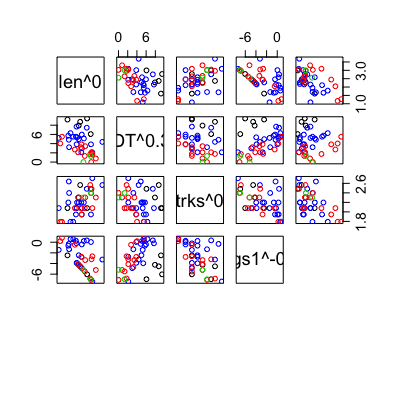
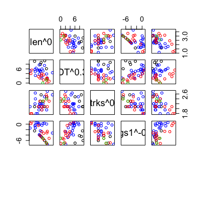
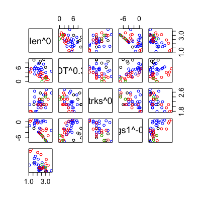
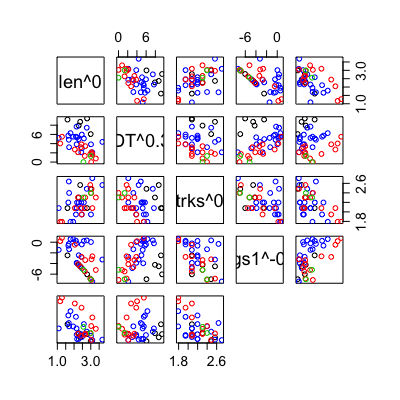
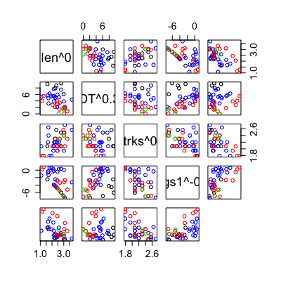
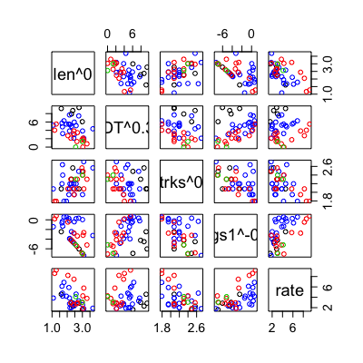